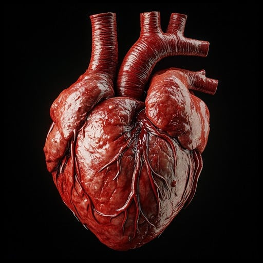
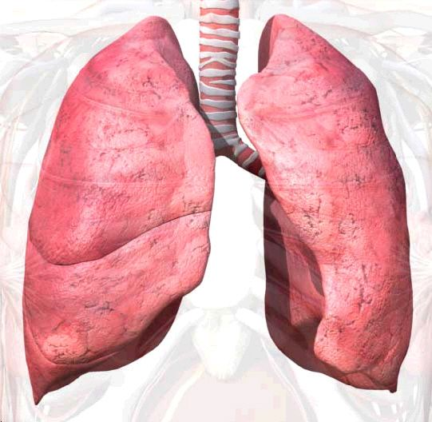
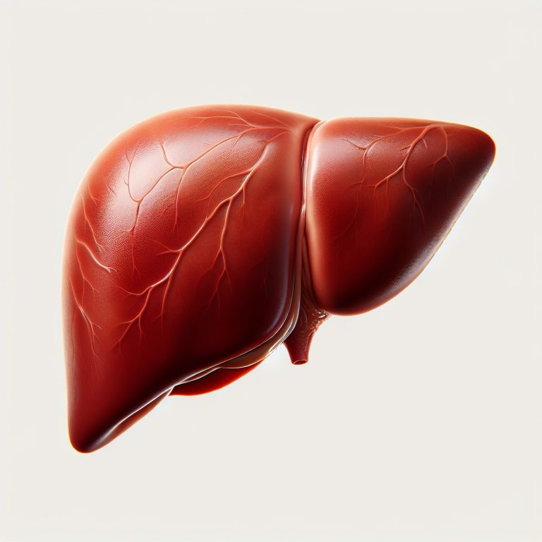
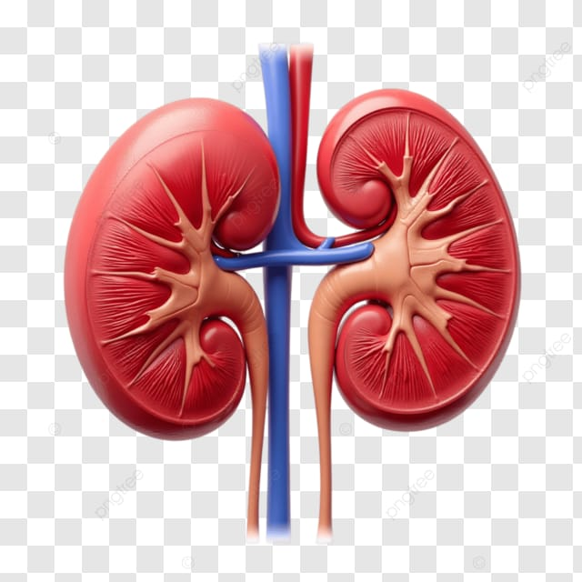
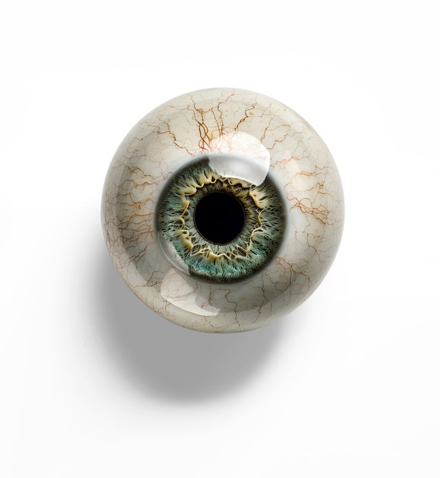

The heart is a vital organ that pumps blood throughout the body. Heart transplants are possible for patients with severe heart failure.

Lungs help in breathing and oxygen supply. Lung transplants can save lives of patients with chronic lung diseases.

The liver detoxifies blood and supports digestion. Living donors can donate a portion of their liver to someone in need.

The kidneys filter waste from blood. A healthy person can donate one kidney to save the life of another.

Corneal transplants can restore vision for people with corneal blindness. Eye donation can be done after death.